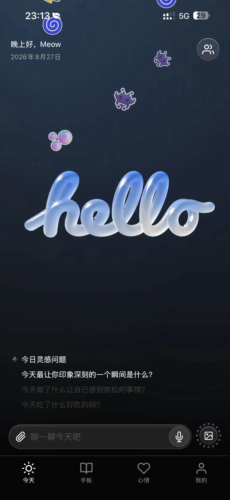
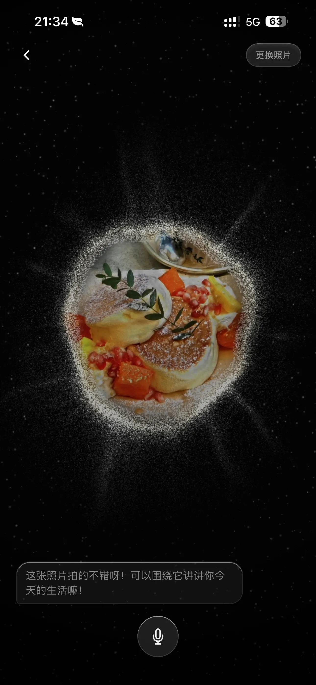
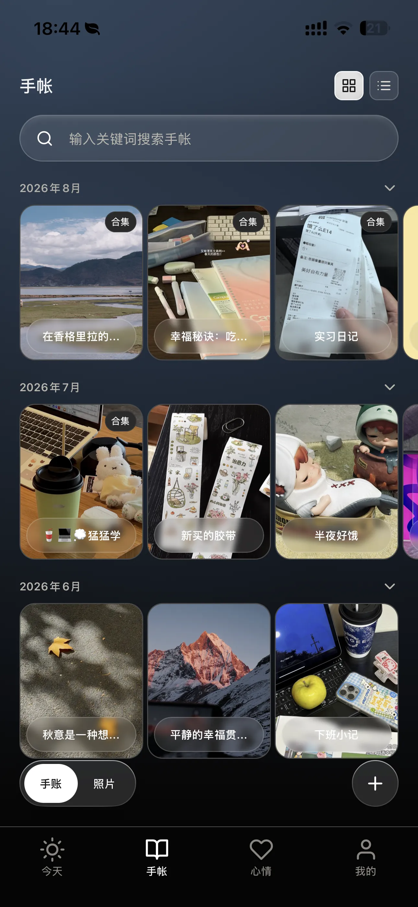
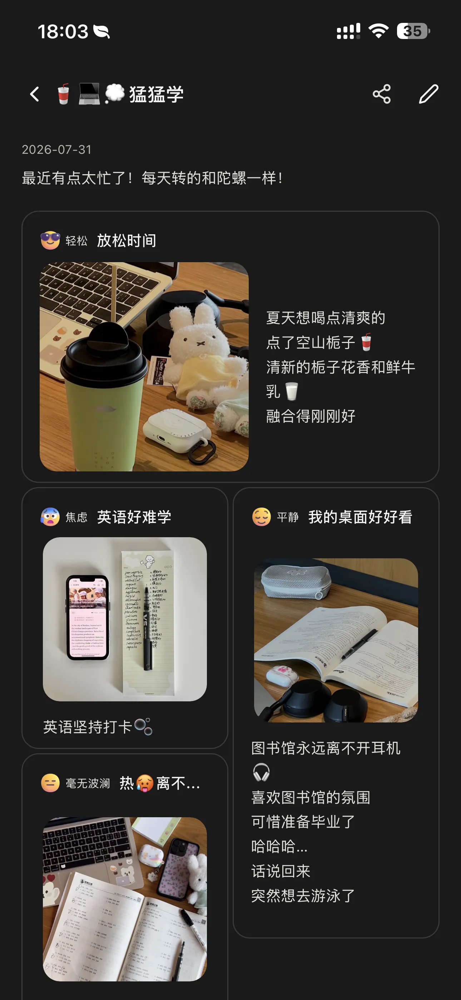


AI对话生成式手帐：功能详情
01 AI引导式对话
场景一：被动引导式分享
当用户想要记录生活，但又感觉“无从写起”时，通过点击“灵感问题”，AI会引导用户回忆当天的经历、感受，以及哪些细节值得留下。对话结束后，AI会将零散表达整理为一篇连贯、有情绪的图文手帐。
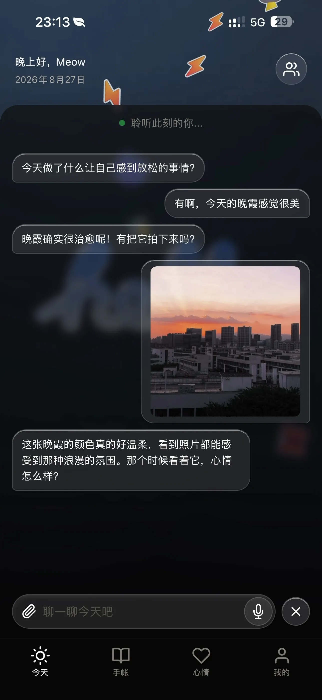
场景二：用户主动式分享
用户主动上传一张照片，围绕照片讲述今天的经历、感受。AI会在语音对话中陪伴并引导用户补充细节，最后将照片、对话和情绪整理成手帐。
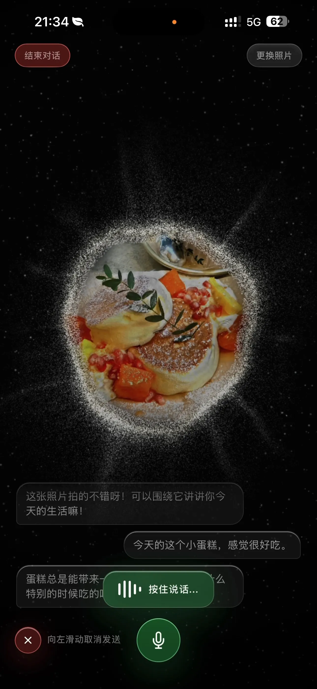
02 手帐页 × 照片墙
手帐页面保存由AI生成的图文记录，将每次的对话、照片、心情沉淀为可回顾的生活记忆。


照片墙将用户的照片汇集起来，形成更直观的生活回顾。用户可以点击任意一张照片进入手帐，回忆照片背后的经历和心情。
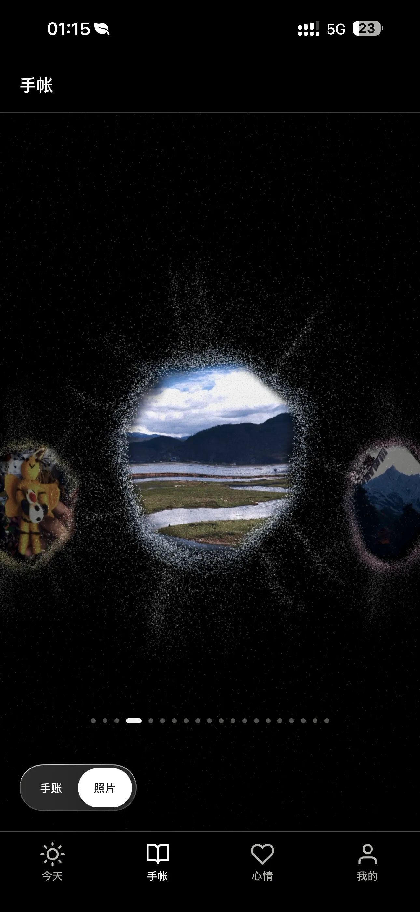
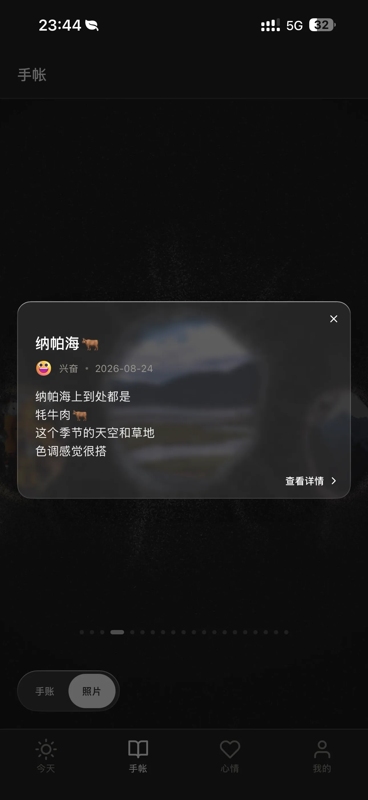
03 心情 × 情绪曲线
用户可以轻松记录每日心情，并生成近30天的情绪曲线，更直观地看到自己最近的状态变化。
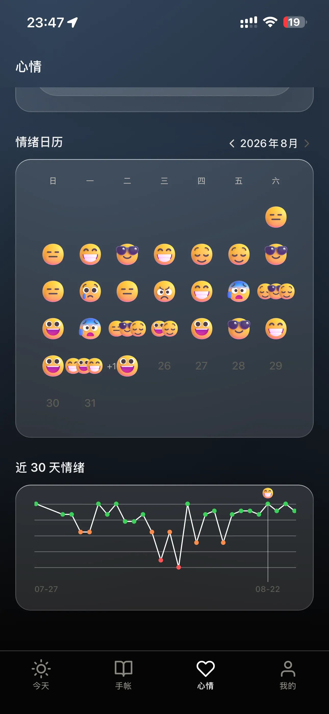
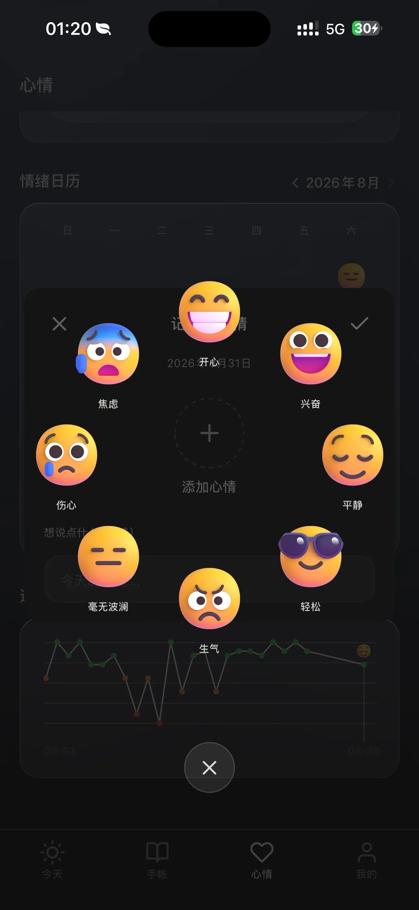
04 社区
加入社区功能满足用户的社交需求。用户既可以主动分享手帐PLOG，也可以浏览、点赞、评论别人的生活记录，从不同的日常中获得灵感和共鸣。
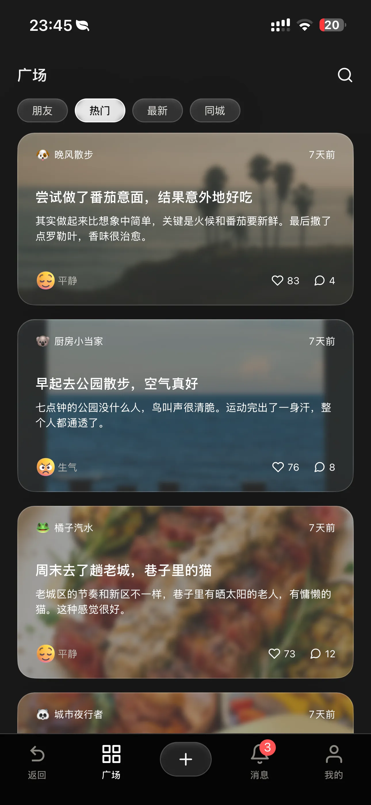
05 在线 × 离线对话
针对用户可能在通勤路上、旅行或网络不稳定的场景下使用AI对话功能：
· 在线状态下，AI基于大模型更自然的理解用户的表达、追问细节并生成手帐；
· 离线状态下，仍能通过本地的话题识别和预设文案库，帮助用户完成基础记录，避免网络问题打断当下想要表达的瞬间。
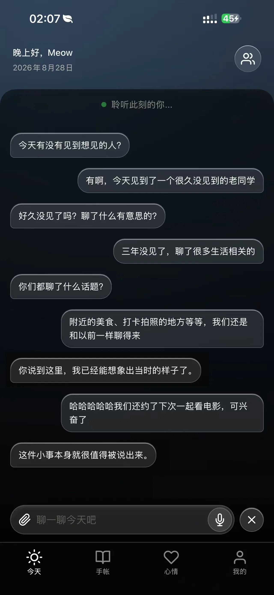
06 深色 × 浅色模式适配
App跟随系统，适配深色/浅色模式，以适应用户在不同时间和环境下的使用习惯。
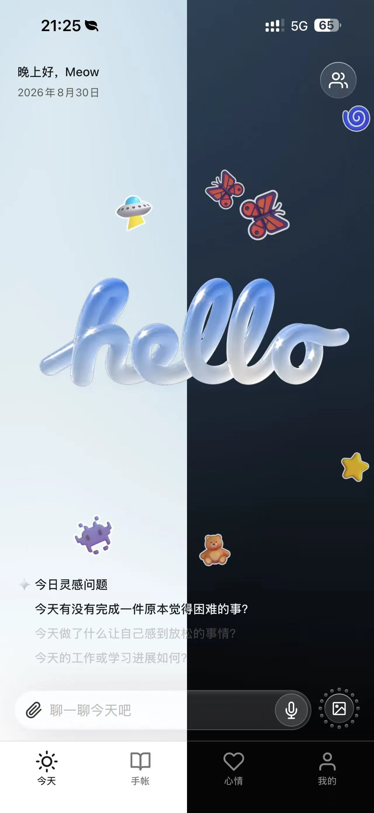